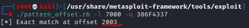

bufferoverflow
1- spiking (sunucuyu çökertebiliyor muyuz ona bakarız)
2- fuzzing yaparız yani sunucuya bir sürü karakter yollayıp kaç karakterle çökertebiliyoruz onu buluruz
3- offset ile tam olarak kaçıncı karakterde çöktüğünü tespit ederiz. bu noktadan sonra exploiti yazmaya hazır oluruz.
→ offset işlemini kali de genelde “usr/share/metasploit-framework/tools/exploit” kısmında bulunan “pattern_create.rb” programı ile bir karakter pattern'i oluştururuz örneğin “./pattern_create.rb -l 7000" diyerek 7000 karakterli bir pattern oluşturduk. Ardından bu karakter dizisi içerisinde immunite debugger gibi bir program ile sunucunun çöktüğü anda alınan “386F4337” gibi bir “EIP 386F4337” EIP değeri alırız ve bu değeri kalide pattern_create.rb gibi benzer bir exploit tool olan pattern_offset.rb yi “./pattern_offset.rb -l 7000 -q 386F4337” bu şekilde kullanarak sunucunun tam olarak kaçıncı karakter gönderiminde çöktüğünü buluruz.

Böylelikle 2003. değere geldiğimizde biz ne yazarsak yani koyacağımız değer ne olursa EIP değerine son olarak o yazılacak bu şekilde tam bufferoverflow olduğu anda EIP değerine istediğimiz şeyi yazdırarak yani istediğimiz kodu koyarak içeriye sızabileceğiz. Yani EIP'ye istediğimiz kodu yazdırıp onu çalıştırmasını söylemiş olabileceğiz.
EIP gösterimi aşağıdadır:
bundan sonra artık EIP kısmında reverse shell yaparak bağlantı açabiliriz. Bunu ise RAM kısmında çalıştıracağımız için assembly olarak yollamamız gerekiyor ki instruction olarak RAM'de çalıştırabilelim. Bunu da msfvenom gibi tool'lar sayesinde yapabiliyoruz. Bunu yaparken çalışmayabilecek olan karakterleri çıkartmamız gerekiyor yani “badcharacters” kontrolü yapmalıyız.
yukarıdaki şekilde bir badChar gönderip sunucuda kontrol yapmalıyız (bad character kontrolü için).

örneğin yukarıda ki gibi bir sonucu sonuna kadar inceleyip geçişlerde bir kopukluk var mı yok mu diye kontrol etmeliyiz. 01,02,03 diye giderken eğer mesela 04'den 06'ya atlamışsa o arada bir badcharacter vardır onu o zaman kullanmamalıyız. Bir badcharacter örneği; “x00” vb gibi. Bu şekilde bad Character kontrolü yapmış oluyoruz.
bu pencerede o seçili yeri göstermek için ise aşağıda gösterilen ESP kısmına gelip bi kere tıklayıp mavi şekilde seçtikten sonra →
→ sağ tık yapıp “Follow in Dump” dedikten sonra →
→ bizi bu yere götürecek ve bu seçili kısımda badcharacter kontrolü yapabiliriz.
Şimdi gelelim assembly kodlarını hex kodlarına dönüştürmeye. Yine “usr/share/metasploit-framework/tools/exploit” kısmında bulunan “nasm_shell.rb” ile bunu yapabiliyoruz. Mesela biz bu durumda “JMP ESP” kodunu hex koda çevirelim;
 çeviri çıktısı olarak “FFE4” elde ettik. Bu hex kodu immunity debugger içine bir mona python modülü yükledikten sonra aratacağız.
çeviri çıktısı olarak “FFE4” elde ettik. Bu hex kodu immunity debugger içine bir mona python modülü yükledikten sonra aratacağız.immunity debugger içine mona python modülünü indirip içine attıktan sonra alt kısımda bulunan konsola “!mona modules” yazıp enter'a basınca karşımıza aşağıdaki gibi bir pencere açılacak.
consol'un yeri burada. buraya “!mona modules” yazıp enter'a basıyoruz ve aşağıda ki pencere açılacak;
burada örneğin ilk satırda olan “essfunc.dll” gibi “False” olan yerlerdeki bu dosyalarda memory koruması yok demektir ve hacklemek istediğimiz servisle beraber çalışıyor. Eğer biz burada bir “JUMP ESP” kodu bulabilirsek ve o kodu kullanarak bir işlem yapabilirsek o zaman istediğimiz sonuca varabiliriz. Biz zaten “nasm_shell.rb" sayesinde bu hex kodu almıştık
bu şekilde elde etmiştik “FFE4” kodunu aratalım.
console kısmına bu şekilde yazarak ve bu “FFE4” yani “JMP ESP” kodunun çalıştığı modül olarak “essfunc.dll” seçerek bu şekilde aratma yapıyoruz. (Hatırlatma: essfunc.dll modülünü üstte ki pencerede “FALSE” yazan ilk satırdan elde etmiştik.)
Arama tamamlandıktan sonra;
böyle bir sonuç geliyor. Demek ki bu adreslerde “JMP ESP” kodu çalıştırılıyormuş. Eğer bu adresi kullanarak EIP'ye bir komut verebilirsem, göstereceğim bir shell koda yönlendirme yapabilirim yani reverse shell işlemim başarılı olmuş ve içeri sızmış olurum. Not: burada ki tüm adresleri tek tek denemek gerekebilir.
Şimdi msfvenom ile revers shell karakter kodu oluşturalım.
bu şekilde yazarak kodu çalıştırıyoruz.
Bu gördüğümüz işaretli kısım aslında bizim için oluşturulmuş biz backdoor yani zararlı bir yazılım. Bu görülen hex hali ve bu assembly instruction'larına dönüştürülerek çalıştırılacak. Şimdi bunu kopyalayıp string olarak sunucuya göndereceğiz, tam bufferoverflow ettiği anda bu zararlı string çalışıp reverse shell yaparak bize bağlanıp içeriye erişim verecek, böylelikle sunucuyu hacklemiş olacağız.